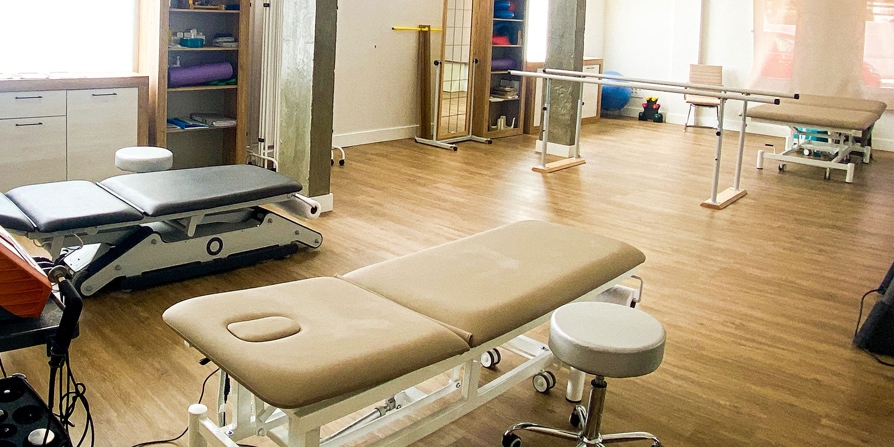

En Clinical Serenity, transformamos la rehabilitación en una experiencia de bienestar integral. Fisioterapia avanzada con un enfoque humano y sereno.

Escribenos para saber sobre nuestras ofertas especiales que tenemos semanalmente
Especialidades
Combinamos técnicas tradicionales con tecnología de vanguardia para resultados duraderos.
Programas personalizados para atletas de alto rendimiento y aficionados que buscan volver al campo con mayor fuerza.
Enfoque especializado en la recuperación de funciones motoras y equilibrio.
Técnicas de movilización precisas para reducir el dolor crónico.
Programas personalizados para una recuperación segura y efectiva después de cirugías ortopédicas.
Especialistas
Dra. Elena Martínez
Directora Clínica & Osteopatía
Dr. Carlos Ruíz
Fisioterapia Deportiva
Dra. Sofía Alarcón
Neurología Funcional
Dr. Miguel Torres
Rehabilitación Postquirúrgica
Lic. Ana Gómez
Terapia Manual Avanzada